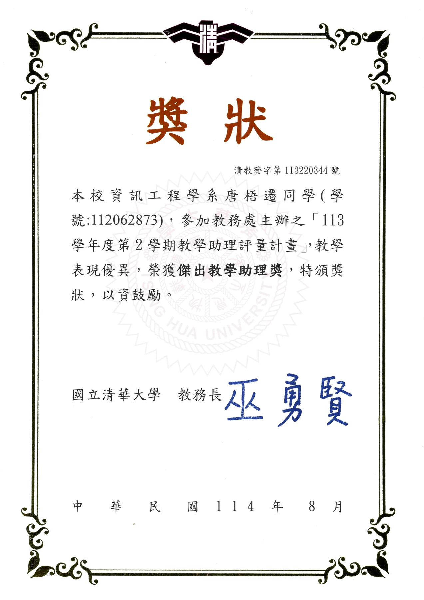
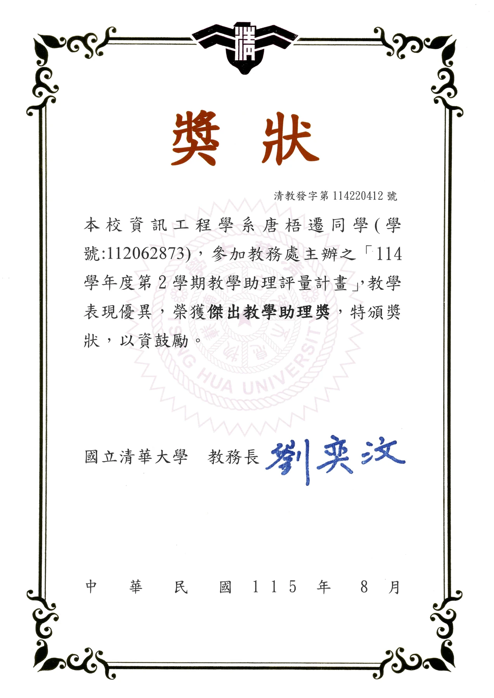
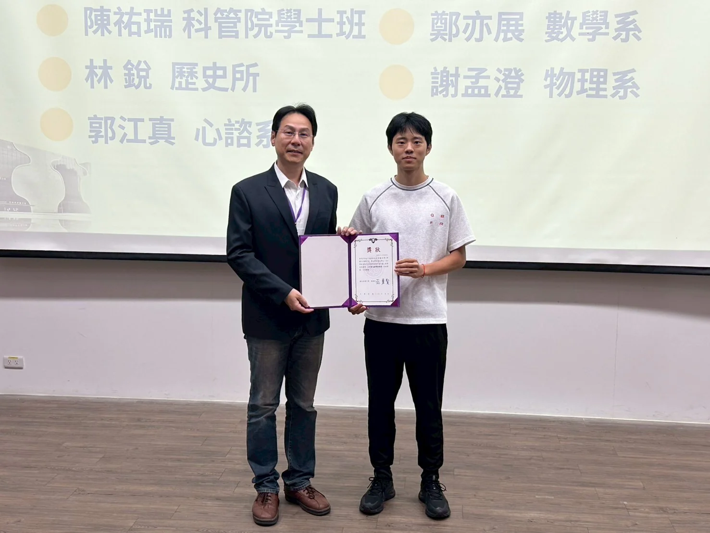
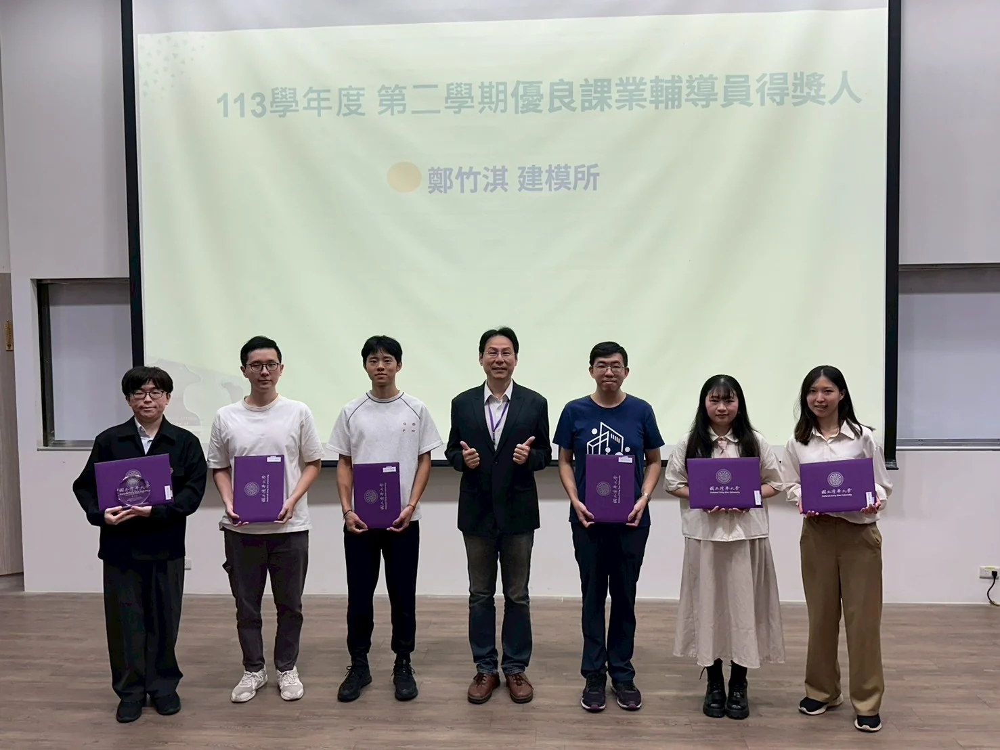
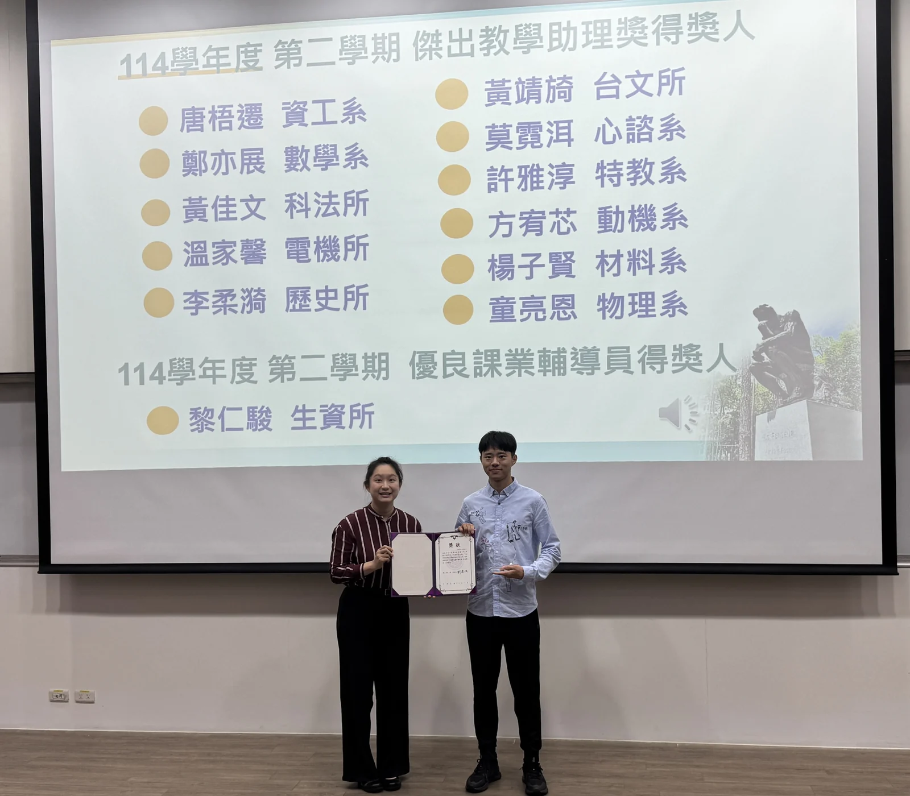

Awards & Honors · Aug 2025–
Aug 2026
Outstanding Teaching Assistant Award × 3
National Tsing Hua University · Spring 2025, Fall 2025, Spring 2026
Certificates3





Photos3






Awards & Honors · Aug 2025–
Aug 2026
National Tsing Hua University · Spring 2025, Fall 2025, Spring 2026




